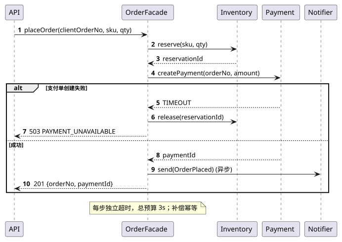

看电视要开投影、开功放、放幕布、调灯光，顺序错了就没画面。每个想播片的地方都抄一遍这四步，迟早漏一步。外观模式提供一个入口：内部按顺序调子系统，对外只暴露“看片”和“结束”。
坏写法是每个调用点自己排：
lights_dim();
projector_on();
amplifier_on();
screen_down();四个调用点各写一遍，顺序不一致；投影开机失败时，前面的灯已经调暗、幕布已经放下，没人负责收尾。
外观把这些收进 watch_movie()：按顺序调，任一步失败就逆序回滚。调用方只说“我要看片”。
左边是用户，中间是外观入口，右边是四个子系统。
C 版外观是一组函数加一个 started 标记；C++ 版是类，析构时兜底关闭。
/* 外观 · 家庭影院一键开机
* gcc -std=c11 -Wall -Wextra facade.c -o facade
*/
#include <stdio.h>
static void lights_dim(void) { puts(" 灯光调到 20%"); }
static void projector_on(void) { puts(" 投影仪开机"); }
static void amplifier_on(void){ puts(" 功放开机，切到 HDMI 1"); }
static void screen_down(void) { puts(" 幕布放下"); }
typedef struct { int started; } theater_t;
static void watch_movie(theater_t *t)
{
puts("watch_movie():");
lights_dim();
projector_on();
amplifier_on();
screen_down();
t->started = 1;
puts(" 可以开始播放");
}
static void end_movie(theater_t *t)
{
puts("end_movie():");
puts(" 关投影、关功放、灯光回升、幕布收起");
t->started = 0;
}
int main(void)
{
theater_t t = { 0 };
watch_movie(&t);
end_movie(&t);
printf("上层只调了两个方法，没有碰任何子系统\n");
return 0;
}watch_movie(): 灯光调到 20% 投影仪开机 功放开机，切到 HDMI 1 幕布放下 可以开始播放 end_movie(): 关投影、关功放、灯光回升、幕布收起 上层只调了两个方法，没有碰任何子系统
// 外观 · 家庭影院一键开机
// g++ -std=c++17 -Wall -Wextra facade.cpp -o facade_cpp
#include <cstdio>
class HomeTheater {
public:
void watchMovie() {
std::puts("watchMovie():");
std::puts(" 灯光调到 20%");
std::puts(" 投影仪开机");
std::puts(" 功放开机，切到 HDMI 1");
std::puts(" 幕布放下");
std::puts(" 可以开始播放");
started_ = true;
}
void endMovie() {
std::puts("endMovie():");
std::puts(" 关投影、关功放、灯光回升、幕布收起");
started_ = false;
}
private:
bool started_ = false;
};
int main()
{
HomeTheater t;
t.watchMovie();
t.endMovie();
std::puts("上层只调了两个方法，没有碰任何子系统");
return 0;
}watchMovie(): 灯光调到 20% 投影仪开机 功放开机，切到 HDMI 1 幕布放下 可以开始播放 endMovie(): 关投影、关功放、灯光回升、幕布收起 上层只调了两个方法，没有碰任何子系统
| 角色 | C 版 | C++ 版 | 差别意味着什么 |
|---|---|---|---|
| 入口形态 | 一组函数 + 状态标记 | 类 + 成员状态 | C 显式传状态，C++ 封装 |
| 顺序 | 函数体内硬编码 | 函数体内硬编码 | 顺序只此一处 |
| 失败回滚 | 调用方检查返回值 | 异常 / 返回值 + 析构兜底 | 必须有，不能留在半开状态 |
| 子系统可用性 | 仍可直接调用 | 仍可直接调用 | 外观不替代子系统 |
参考教程：refactoringguru.cn
生产实例：下单履约外观（库存 / 运费 / 支付 / 通知）
下单不是一次数据库写入：锁库存、算运费、建支付单、发履约消息，四步各有超时和失败模式。让每个入口自己排这四步，迟早漏补偿。外观提供 placeOrder() 一个入口，内部按顺序调用，任一步失败按逆序补偿。

@startuml
autonumber
participant "API" as A
participant "OrderFacade" as F
participant "Inventory" as I
participant "Payment" as P
participant "Notifier" as N
A -> F: placeOrder(clientOrderNo, sku, qty)
F -> I: reserve(sku, qty)
I --> F: reservationId
F -> P: createPayment(orderNo, amount)
alt 支付单创建失败
P --> F: TIMEOUT
F -> I: release(reservationId)
F --> A: 503 PAYMENT_UNAVAILABLE
else 成功
P --> F: paymentId
F -> N: send(OrderPlaced) (异步)
F --> A: 201 {orderNo, paymentId}
end
note over F: 每步独立超时，总预算 3s；补偿幂等
@enduml